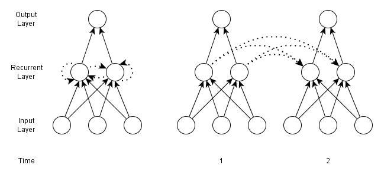

The input to an RNN and/or its target are sequences. An input sequence is denoted $\left( \mathbf{x}^{(1)}, \mathbf{x}^{(2)}, \ldots, \mathbf{x}^{(T)} \right)$, where each datapoint $\mathbf{x}^{(t)}$ is a real-valued vector. Similarly, a target sequence can be denoted by $\left( \mathbf{y}^{(1)}, \mathbf{y}^{(2)}, \ldots, \mathbf{y}^{(T)} \right)$. Sequences may be finite or countably infinite in length, with the maximum index of a finite sequence being $T$. A training set will consist of an (input, target) pair, which will take on the form (vector, sequence), (sequence, vector) or (sequence, sequence).
Using temporal terminology, alothough there is no need for RNNs to be applied to only temporal sequence data, an input sequence consits of datapoints $\mathbf{x}^{(t)}$ that arrive in a discrete sequence of time steps indexed by $t$. Superscripts within parenthesis will be used to indicate time, with subscripts used to indicate node indices. Predicted outputs at a given time $t$ are denoted by $\hat{\mathbf{y}}^{(t)}$.
The time indexing may correspond to some continuous time real-world process, e.g. frames of a video or audio amplitudes at fixed intervals. However, it may also be ordinal, with no true correspondance to duration, or even have no relation to time at all, e.g. genetic data or natural language. In the word sequence "The dog went to the store", $\mathbf{x}^{(1)}=\mathrm{The}$, $\mathbf{x}^{(2)}=\mathrm{dog}$, etc.
Similar to feedforward networks, RNNs may not have 'conventional' edges that form cycels, i.e. edges betwenn time steps may not form cycles. However, edges that connect between time steps may form cycles of any length (including one). At time $t$, nodes with recurrent edges receive input from the current datapoint $\mathbf{x}^{(t)}$ and also from the values of the hidden nodes $\mathbf{h}^{(t-1)}$ in the network's previous state. The output $\hat{\mathbf{y}}^{(t)}$ at time $t$ is calculated from the hidden node values $\mathbf{h}^{(t)}$. Inputs $\mathbf{x}^{(t')}$ can influence the output $\hat{\mathbf{y}}^{(t)}$ provided that $t' < t$, i.e. $\mathbf{x}$ comes before $\hat{\mathbf{y}}$, through recurrent connections.
Assuming a sigmoid activation function $\sigma$ for the hidden layers and a softmax function applied to the output layer, two calculations are needed to calculate the output of a simple recurrent net (as in the one shown below) at a given time step $t$ $$\mathbf{h}^{(t)} = \sigma(W^{hx}\mathbf{x}^{(t)} + W^{hh}\mathbf{h}^{(t-1)} + \mathbf{b}_h)$$ $$\hat{\mathbf{y}}^{(t)} = \mathtt{softmax}(W^{yh}\mathbf{h}^{(t)} + \mathbf{b}_y)$$ Here, $W^{hx}$, $W^{hh}$ and $W^{yh}$ are the weights one the edges from the input to the hidden layer, the hidden layer at time $t-1$ to the hidden layer at time $t$ and between the hidden layer and the output layer. The vectors $\mathbf{b}_h$ and $\mathbf{b}_y$ are bias parameters, for the hidden nodes and output nodes respectively, that allow these ndes to learn an offset. The dynamics of a network like this can be considered as a single network with temporal connections, as in A below, or as a larger (or deeper) network that is unfolded over the time domain, as in B below. This unfolded network then becomes a simple feedforward network in terms of its structure, and can be trained via backpropagation, for which the algorithm backpropagation through time (BPTT) was introduced.
Uncited References: